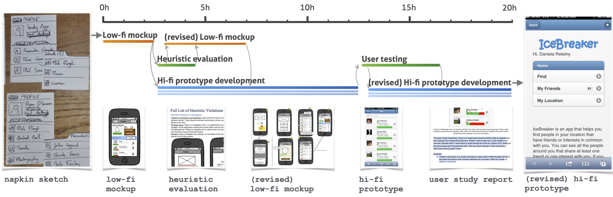

Flash Teams and Organizations

Project Abstract:
Flash teams are computationally-guided teams of crowd experts, supported by lightweight, reproducible, and scalable team structures. Crowdsourcing platforms give users access to thousands of workers, on-demand, but the most prevalent model, microtask crowd work, fails to take advantage of the combined expertise of these workers. Flash teams structure expert crowd work to enable users to complete complex and interdependent projects (e.g., web design) by embedding techniques of high performing offline teams within a model that can take advantage of computation’s ability to abstract, scale, and visualize progress.
Key Publications:
- Valentine, M. A., Retelny, D., To, A., Rahmati, N., Doshi, T., & Bernstein, M. S. (2017, May). Flash organizations: Crowdsourcing complex work by structuring crowds as organizations. In Proceedings of the 2017 CHI conference on human factors in computing systems (pp. 3523-3537). BEST PAPER AWARD
- Retelny, D., Robaszkiewicz, S., To, A., Lasecki, W. S., Patel, J., Rahmati, N., & Bernstein, M. S. (2014, October). Expert crowdsourcing with flash teams. In Proceedings of the 27th annual ACM symposium on User interface software and technology (pp. 75-85). BEST PAPER AWARD
Media:
- The Pop-Up Employer: Build a Team, Do the Job, Say Goodbye. The New York Times. July, 2017
- Stanford team looks to take crowdsourcing to a whole new level. Stanford News. August 25, 2014.
- Stanford’s Symbolic Systems program bridges the gap between humanity and technology. Stanford News. August, 2014.